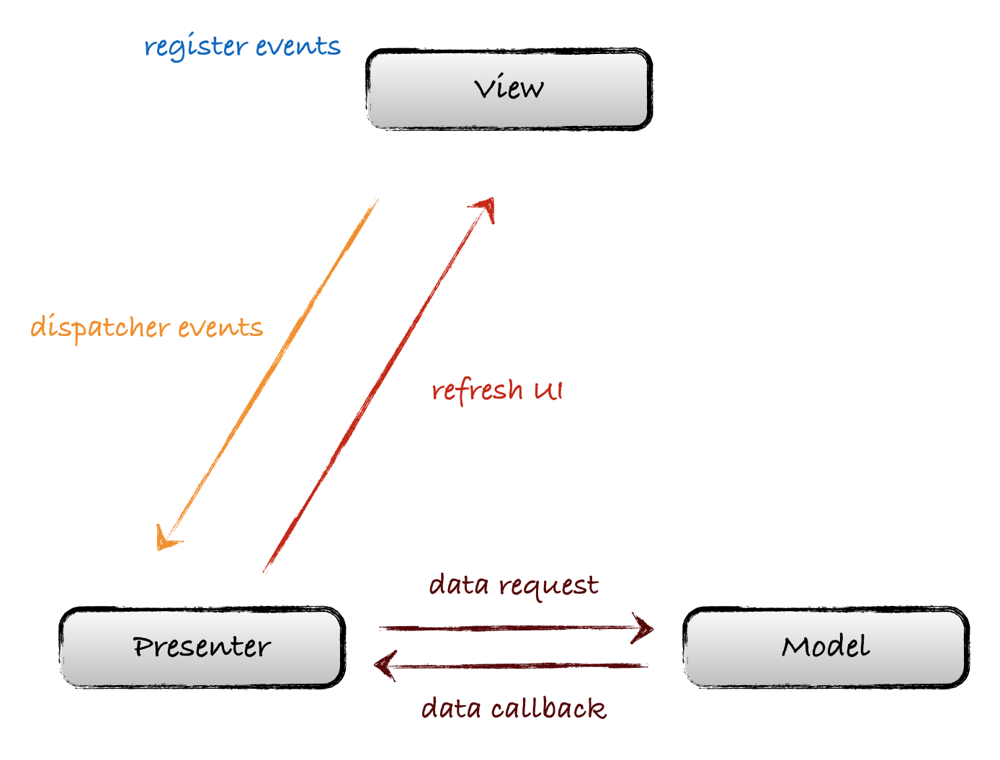

class: center, middle, dark background-image: url() # The Clean Android Architecture .right.gary_light[[Wang Jie](http://github.com/wangjiegulu)] .middle[[Github](https://github.com/wangjiegulu)] .middle[[Blog](http://blog.wangjiegulu.com)] --- ### Android 系统组件 1. UI（控件，布局、样式...） 2. 数据库 SQLite 3. 网络 4. 文件系统 5. 硬件（电池、蓝牙、陀螺仪...） 6. 线程、进程 7. ... --- ### 为了解决什么？ -- 1. 表现层与逻辑层之间耦合严重 2. 层次不够清晰导致无法根据模块划分指责 3. 在不变动逻辑层的情况下无法较容易地替换表现层 4. 无法方便地进行单元测试 5. 代码复用程度较低 6. ... --- ### 期望什么？ 1. 可测试：业务规则可以脱离UI、数据库、web服务器和其它外部元素去进行测试。 2. UI的独立：UI可以在不修改系统其它地方的情况下很容易地被改变。 3. 可复用：业务逻辑的可复用性。 4. 实现隔离：业务、UI、数据的隔离。 <br/> .gary_light[扩展 [《The Clean Architecture》](https://blog.wangjiegulu.com/2016/03/14/Android-%E4%B8%80%E4%B8%AA%E5%B9%B2%E5%87%80%E7%9A%84%E6%9E%B6%E6%9E%84%EF%BC%88%E7%BF%BB%E8%AF%91%EF%BC%89/)] --- ### 对 App 分层 -- - 前端：UI 展示和用户交互 - 后端：为前端提供业务逻辑和数据 --- ### 对 App 分层 —— 前端 - Viewer 层：UI 展示和用户交互，包括但不仅限于 Layout 布局、.rfs[Activity] / .rfs[Fragment] / .rfs[ViewGroup] / .rfs[Dialog] ... - Presenter 层：与后端进行业务的交互，完成后再回调到 View 层进行 UI 的刷新。 --- ### 对 App 分层 —— 后端 后端称为 Model 层：数据层，包含源数据，并给 View 层提供经过业务逻辑处理的业务数据 -- Model 又可以拆分为以下两部分： - BLL: .rfs[Business Logic Layer]，业务逻辑层，负责通过数据访问层获取数据，并对该数据进行业务逻辑处理，再返回给前端（presenter） - DAL: .rfs[Data Access Layer]，数据访问层，包含各种数据源，可能来自 .rfs[网络]、.rfs[文件]、.rfs[数据库]、.rfs[Shared Preference]、.rfs[ContentProvider]、.rfs[缓存]... 各个职责 --- ### MVP .gary_light[扩展：[《Android上的MVP：如何组织显示层的内容》](https://blog.wangjiegulu.com/2014/07/13/Android%E4%B8%8A%E7%9A%84MVP%EF%BC%9A%E5%A6%82%E4%BD%95%E7%BB%84%E7%BB%87%E6%98%BE%E7%A4%BA%E5%B1%82%E7%9A%84%E5%86%85%E5%AE%B9/)] 架构图：[MVP-Architecture.pdf](display/MVP-Architecture.pdf)  --- ### MVP 模式的实现 <b>扩展 Demo</b>: [CleanAndroidProject_MVP](https://github.com/wangjiegulu/CleanAndroidProject_MVP) <b>Viewer</b>: 所有 Viewer 都需要实现该接口,常见的 Viewer 有 Activity, Fragment, ViewGroup等 ```java public interface Viewer { Viewer bind(OnViewerLifecycleListener onViewerLifecycleListener); Viewer bind(OnViewerDestroyListener onViewerDestroyListener); Context context(); void showToast(..); void showLoadingDialog(..); void cancelLoadingDialog(); } ``` --- ### MVP 模式的实现 <b>扩展 Demo</b>: [CleanAndroidProject_MVP](https://github.com/wangjiegulu/CleanAndroidProject_MVP) <b>Presenter</b>: 所有 Presenter 都需要实现该接口, 它与 Viewer 的生命周期有关，关心任务执行状况 ```java public interface Presenter extends OnViewerDestroyListener { void bind(Viewer bindViewer); void closeAllTask(); } ``` --- ### 每层开放的接口 -- - P 层：Presenter，对外提供给 Viewer - BLL 层：Interactor，对外提供给 Presenter - DAL 层：Repository，对外提供给 Interactor --- ### 测试友好 - 可控制：是否可以将待测元件的状态控制到如测试条件要求。 - 可观察：是否可以观察（中间或最后的）测试结果。 - 可隔离：待测元件是否可以隔离测试。 - 关注点分离：待测元件是否有单一且清楚定义的任务。 - 可自动化：待测元件是否可以自动化测试。 --- ### 进一步解耦 控制反转：依赖注入 什么叫依赖？ ``` interface Energy { } class GasEnergy implements Energy { } // 由 Car 在内部创建 class Car { Energy energy = new GasEnergy(); } // 通过 Car 的构造方法传入 class Car { Energy energy; public Car(Energy energy) { this.energy = energy; } } ``` --- ### 单元测试 Android Test，Test --- ### 依赖隔离 防止跨层非法访问接口 --- ### MVP 缺点：但是在实际项目中，随着逻辑的复杂度越来越大，Activity臃肿的缺点仍然体现出来了，因为Activity中还是充满了大量与View层无关的代码，比如各种事件的处理派发，就如MVC中的那样View层和Controller代码耦合在一起。 -- 增加 Controller 层 <img src="https://raw.githubusercontent.com/wangjiegulu/wangjiegulu.github.com/master/images/mvp/MVP_Controller.jpg" width=600/> --- class: center, middle #That's all, Thank you.